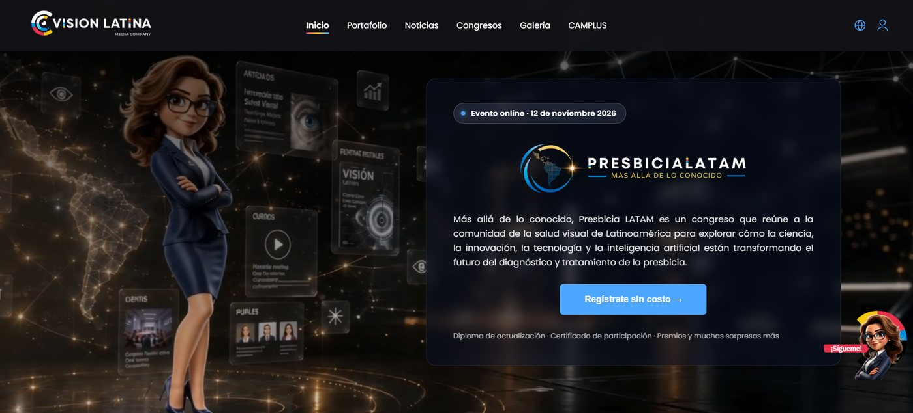

Angular · SSR
IdiomasES · EN · PT
3
Panel adminPHP + MySQL · CSRF
01 / 05 Producción
Visión Latina — Plataforma web
Sitio Angular con SSR en español, inglés y portugués, sistema de noticias con lectura tipo periódico y un panel de administración propio en PHP + MySQL.
- Angular
- SSR
- ngx-translate
- PHP
- MySQL